Trends 2026 Education Today: News, Trends, Theories and Approaches Every Educator Should Know
Global reports, AI in education, PISA 2025, the science of learning, inclusion, assessment reform, teachers, and Bangladesh’s reforms from 2024 to 2026
Contents
- 1. The Big Picture: SDG 4 at the Countdown to 2030
- 2. The Learning Crisis, Recovery and Foundational Learning
- 3. PISA 2025 and Other International Assessments
- 4. Artificial Intelligence and Generative AI in Education
- 5. Phones, Screens and Digital Wellbeing
- 6. The Science of Learning
- 7. Newer Theories and Pedagogical Approaches
- 8. Competencies, Future Skills and Education 4.0
- 9. Inclusion, Equity and Wellbeing: UDL 3.0, SEL and Beyond
- 10. Assessment Reform
- 11. Teachers and the Teaching Profession
- 12. Climate, Green and Global Citizenship Education
- 13. Higher Education Trends
- 14. Bangladesh: Education News and Reforms, 2024–2026
- 15. Exam and Viva Focus
- 16. How to Keep Yourself Updated
- 17. References
Education Today: News, Trends, Theories and Approaches
These notes go beyond the syllabus and are not taken from a course curriculum. They explain the biggest current issues in education up to November 2026: global reports such as the GEM Report and SDG 4 progress, PISA 2025, artificial intelligence in education, phones and wellbeing, the science of learning, newer theories, competencies and 21st-century skills, inclusion, assessment reform, teachers, climate education, higher education trends, and Bangladesh's education reforms from 2024 to 2026. They finish with a quick-facts sheet, likely viva questions, MCQs, tips on keeping up to date, and references.
Why this note exists
A syllabus is written years before it is taught. The B.Ed and M.Ed courses give the foundations: philosophy, psychology, curriculum, assessment, research and policy. Examiners, however, want to know whether a student can connect those foundations to what is happening now: why PISA scores fell again, what UNESCO says about generative AI, why Bangladesh withdrew its competency-based curriculum, or what the 2026 HSC results tell us. This note fills that gap. Not everything is in the curriculum, and this is the material that most often separates a good answer from an average one.
Each chapter explains a trend, gives the key report or theorist, links it back to a course you have already studied (for example, "links to PC 113" or "links to ED 503"), and adds a Bangladesh angle. Chapter 15 is a question bank for written exams and vivas.
Read the narrative first, then the boxes. Teal boxes = definitions and key frameworks. Golden boxes = must-remember points and exam focus. Green boxes = Bangladesh context. Ash boxes = critical perspectives (useful for "discuss" or "evaluate" questions). Amber Verify before use boxes mark numbers and policy facts that change quickly or that came from press reports: check them on the official site before you quote them.
Quote with a year and a source. "According to the 2026 GEM Report, 273 million children and youth are out of school" sounds far stronger than "many children are out of school".
1. The Big Picture: SDG 4 at the Countdown to 2030
Chapter summary
Sustainable Development Goal 4 (SDG 4) commits the world to "ensure inclusive and equitable quality education and promote lifelong learning opportunities for all" by 2030. It was adopted in 2015 through the Incheon Declaration and Education 2030 Framework for Action .
This chapter covers: The 2026 GEM Report: Access and equity; The 2025 SDG 4 Scorecard: Are countries on track?; The Transforming Education Summit and its legacy.
Sustainable Development Goal 4 (SDG 4) commits the world to "ensure inclusive and equitable quality education and promote lifelong learning opportunities for all" by 2030. It was adopted in 2015 through the Incheon Declaration and Education 2030 Framework for Action. With four years left, the global conversation has shifted from ambition to accountability: which countries are on track, which are not, and what has actually worked. (Links to ED 501 Education in Global Perspective and PC 119 Education and Development.)
1.1 The 2026 GEM Report: Access and equity
The Global Education Monitoring (GEM) Report is UNESCO’s independent annual report that tracks SDG 4. The 2026 edition, Access and equity: countdown to 2030, is the first of a three-part "Countdown to 2030" series. The next two will cover quality and learning (2027) and relevance of education (2028) (UNESCO, 2026a).
MUST REMEMBER: 2026 GEM REPORT HEADLINE FIGURES
273 million children, adolescents and youth are out of school, a number that has risen for the seventh consecutive year; about one in six of the age group is excluded.
There are 327 million more students in primary and secondary school than in 2000, so access has expanded even as the absolute out-of-school number rises with population growth.
27% of five-year-olds are already in primary school instead of pre-primary (too early), and six in ten who enrol in university never graduate.
Countries with 12 years of compulsory education rose from 8% (1998) to 26% (2023). Countries with inclusive education laws rose from 1% to 24% since 2000.
A new Equitable Financing in Education (EFE) Index finds fewer than one in ten countries’ funding mechanisms have a strong equity focus.
Fast progress is possible: Madagascar, Togo, Morocco, Viet Nam, Georgia and Türkiye cut out-of-school rates by at least 80% for some age groups since 2000; Côte d’Ivoire halved its rates.
The report’s main message is that progress comes from sustained, country-owned policy over decades, not quick fixes. It draws four policy principles: (1) mix policies (no single intervention works alone), (2) target financing to disadvantaged groups, (3) localise policies, and (4) think long term. On monitoring, it asks countries to measure participation by age, completion and repetition rather than enrolment alone, and notes that one in three countries do not report urban-rural gaps and one in two do not report wealth gaps.
1.2 The 2025 SDG 4 Scorecard: Are countries on track?
Since 2022, countries have set their own national SDG 4 benchmarks for seven or eight indicators (for example, early childhood participation, out-of-school rate, completion, minimum proficiency, trained teachers and public spending). About 80% of countries have now set at least one benchmark. The 2025 SDG 4 Scorecard (UNESCO GEM Report & UIS, 2025) found that the indicators furthest off track are:
Minimum reading proficiency at the end of primary: about 11 percentage points behind national targets, partly because many countries lack data.
Early childhood education participation: about 9 points behind (a COVID-19 effect).
Trained teachers in pre-primary: about 7 points behind.
Public spending: in 2023 countries were further from the twin benchmarks of 4–6% of GDP and 15–20% of total public expenditure than they were in 2015.
The Scorecard estimated 272 million out of school in 2023 and called this an undercount, since the ten most conflict-affected countries could add at least 13 million more (UNESCO GEM Report & UIS, 2025).
Education 2030 Framework for Action (2015): the roadmap for SDG 4. It sets the financing benchmarks of 4–6% of GDP and/or 15–20% of public expenditure on education.
SDG 4 benchmarks: national targets set by each country for 2025 and 2030 on a common set of indicators, so that progress can be compared with the country’s own promise.
Learning-adjusted thinking: the shift from counting enrolment ("schooling") to measuring whether children actually learn ("learning"). See Chapter 2.
1.3 The Transforming Education Summit and its legacy
The UN Secretary-General convened the Transforming Education Summit (TES) in September 2022, after COVID-19 had closed schools for about 1.6 billion learners. It produced national statements of commitment and five thematic "action tracks": inclusive, equitable, safe and healthy schools; learning and skills for life, work and sustainable development; teachers and the teaching profession; digital learning and transformation; and financing of education. Several follow-up initiatives grew from it, including the Greening Education Partnership, the Global Initiative on Digital Learning (Gateways to Public Digital Learning), the International Finance Facility for Education, and the UN High-Level Panel on the Teaching Profession (Chapter 11).
Critics argue that SDG 4 has become a "monitoring industry": more reports than results. The GEM Report itself admits the 2030 targets will not be met. A strong viva answer acknowledges this but points out that country-set benchmarks make governments answerable to their own citizens, and that examples such as Viet Nam or Côte d’Ivoire show steady policy does move the numbers.
Bangladesh achieved near gender parity in primary and secondary enrolment early, a celebrated success. Its weaker points against SDG 4 are learning quality, pre-primary quality, teacher shortages and public spending, which has stayed around 2% of GDP or below for many years, well under the 4–6% benchmark. The FY2026–27 budget raised education to about 2% of GDP, with a stated aim of reaching 5% in phases (Chapter 14).
The 2026 GEM Report figures above are taken from UNESCO’s explainer article (September 2026). The out-of-school figure appears as 273 million in the 2026 report and 272 million (2023 data) in the 2025 Scorecard. Check the latest figure on the GEM Report or UIS website before quoting.
2. The Learning Crisis, Recovery and Foundational Learning
Chapter summary
The single most important idea of the past decade in international education is that schooling is not the same as learning . The World Bank’s World Development Report 2018: Learning to Realize Education’s Promise popularised the phrase "learning crisis" : millions of children attend school for years without learning to read a simple text or…
This chapter covers: What works: the "Smart Buys" evidence.
Key terms:
- Learning poverty (World Bank & UIS, 2019): the share of 10-year-olds who cannot read and understand a simple, age-appropriate text.
The single most important idea of the past decade in international education is that schooling is not the same as learning. The World Bank’s World Development Report 2018: Learning to Realize Education’s Promise popularised the phrase "learning crisis": millions of children attend school for years without learning to read a simple text or do basic arithmetic. (Links to PC 119, PC 117 and ED 501.)
Learning poverty (World Bank & UIS, 2019): the share of 10-year-olds who cannot read and understand a simple, age-appropriate text. It combines being out of school with being in school but not reading.
Foundational learning: basic literacy, numeracy and transferable socio-emotional skills that are the base for all later learning.
Learning recovery: policies to make up for learning lost during COVID-19 closures and other disruptions.
Learning-adjusted years of schooling (LAYS): years of schooling adjusted for how much students actually learn. A country where children spend 11 years in school but learn as much as in 6.5 "quality" years has a large gap.
The World Bank and partners estimated that learning poverty in low- and middle-income countries rose from about 57% before the pandemic to around 70% in 2022 (World Bank et al., 2022). COVID-19 closures were longest in South Asia and Latin America; Bangladesh kept schools closed for about 18 months, one of the longest closures in the world.
2.1 What works: the "Smart Buys" evidence
The Global Education Evidence Advisory Panel (GEEAP), convened by the World Bank, FCDO, UNICEF and USAID, rates interventions by cost-effectiveness. Its 2023 report Cost-Effective Approaches to Improve Global Learning lists as "great buys": giving parents and students information on the benefits, costs and quality of education, and supporting teachers with structured pedagogy, targeting teaching by learning level, and (in some settings) structured lesson plans with linked materials and ongoing teacher support (GEEAP, 2023).
Table 1. High-impact approaches for foundational learning
| Approach | What it means | Example |
|---|---|---|
| Structured pedagogy | A coherent package of lesson plans, student materials and teacher coaching aligned to clear learning goals. | Kenya’s Tusome literacy programme; Sobral in Brazil. |
| Teaching at the Right Level (TaRL) | Group children by current level (not grade) for part of the day and teach to that level. | Pratham (India); scaled in Zambia and elsewhere. |
| Science of reading | Explicit, systematic phonics plus vocabulary, fluency and comprehension. | England’s phonics screening check; reforms in many US states. |
| Coaching teachers | Regular, practical in-class feedback instead of one-off workshops. | Common across successful literacy programmes. |
| Mother-tongue early literacy | Start reading in a language the child speaks, then bridge to others. | MTB-MLE programmes; indigenous-language books in Bangladesh. |
Explain the difference between "schooling" and "learning" with the concept of learning poverty.
Why is Teaching at the Right Level considered cost-effective? (It addresses the mismatch between an over-ambitious curriculum and children’s actual level.)
Link to curriculum theory: Pritchett and Beatty (2015) argued that "overambitious curricula" make children fall further behind each year, because the curriculum moves faster than learning.
National Student Assessments by the Directorate of Primary Education have repeatedly shown that many Grade 3 and Grade 5 pupils do not reach expected competencies in Bangla and mathematics, and that results fell after COVID-19. In February 2026, the new Education Minister named "getting students back to class" as one of three immediate priorities, and the HSC 2026 results (Chapter 14) were read by many commentators as a sign of unrecovered learning loss.
Learning-poverty figures (57% and 70%) come from the 2022 State of Global Learning Poverty update; the World Bank may have published newer estimates. Check the latest DPE National Student Assessment report for exact Bangladesh percentages before quoting them.
3. PISA 2025 and Other International Assessments
Chapter summary
International large-scale assessments (ILSAs) are the main source of comparable evidence on learning. A student of education should know what each one measures, who runs it, and its latest headline.
This chapter covers: PISA 2025: the headline.
International large-scale assessments (ILSAs) are the main source of comparable evidence on learning. A student of education should know what each one measures, who runs it, and its latest headline. (Links to PC 117, EER 582 and ED 501.)
Table 2. Major international assessments
| Assessment | Run by | Who is tested | Latest cycle |
|---|---|---|---|
| PISA | OECD | 15-year-olds: reading, maths, science + an innovative domain | 2025 (results 8 Sep 2026) |
| TIMSS | IEA | Grades 4 and 8: maths and science | 2023 (results Dec 2024) |
| PIRLS | IEA | Grade 4 reading | 2021; next 2026 |
| PIAAC (Survey of Adult Skills) | OECD | Adults 16–65: literacy, numeracy, adaptive problem solving | Cycle 2, results Dec 2024 |
| TALIS | OECD | Teachers and principals | 2024 (results 2025) |
| ICILS | IEA | Grade 8 computer and information literacy | 2023 |
3.1 PISA 2025: the headline
PISA 2025 results were launched by the OECD on 8 September 2026. About 91 countries and economies took part, with science as the major domain and "Learning in the Digital World" as the innovative domain. An optional foreign language assessment (English) was also introduced.
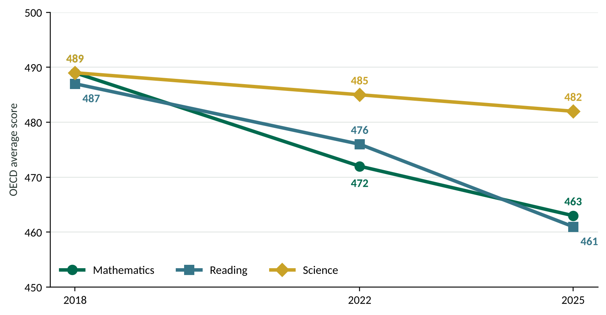
Figure 3. OECD average PISA scores, 2018–2025. Reading and mathematics are now at their lowest ever recorded levels.
Source: OECD PISA 2025 Results (Volume I), as reported by the OECD press release (Sept 2026) and secondary summaries.
The OECD average fell to about 463 in mathematics (472 in 2022; 489 in 2018), 461 in reading (476 in 2022) and 482 in science (485 in 2022). Reading and maths are the lowest averages ever recorded by PISA.
One in five 15-year-olds in OECD countries is now a low performer in all three subjects, up from 16% in 2022.
East Asian systems still lead: Beijing-Shanghai-Jiangsu-Zhejiang (China), Singapore, Macao, Chinese Taipei, Japan and Korea. Singapore topped reading; B-S-J-Z topped maths and science. Estonia is again Europe’s best performer.
Because the decline began before COVID-19 (it was visible from about 2012 in many countries), the OECD links it not only to the pandemic but also to digital distraction, reduced reading for pleasure and wellbeing issues.
Other PISA 2025 findings worth quoting
Devices and distraction: students who use digital devices for leisure at school score much lower; moderate use for learning is linked to better results. About 28% of students say classmates are distracted by devices in most science lessons, compared with fewer than 10% in the top East Asian systems. Clear phone policies are linked to less distraction.
AI use: students who frequently use general AI tools for schoolwork tend to score lower than those who do not, while students who also get chances to learn AI literacy do slightly better; those chances are more common among advantaged students.
Gender: girls outperform boys in reading by about 30 points, boys lead in maths by about 13 points, and science is near parity.
Equity: socio-economic status explains about 12% of the variation in science performance within countries. Canada, Estonia, Ireland, Japan, Korea and Macao combine high performance with equity.
LEARNING IN THE DIGITAL WORLD (PISA 2025 INNOVATIVE DOMAIN)
Measures students’ capacity to build knowledge and solve problems iteratively using computational tools (for example, simulations and block-based programming), while regulating their own learning. It brings together computational thinking and self-regulated learning (OECD, 2026a).
PISA has been criticised for narrowing education to what is measurable, encouraging "league table" policy borrowing, and ignoring local purposes of schooling (Sellar & Lingard, 2013; Zhao, 2020). Defenders reply that it gives low- and middle-income countries an external mirror. A balanced viva answer: use PISA as a diagnostic, not a ranking.
Bangladesh has not taken part in PISA or TIMSS. Its learning evidence comes from national assessments (NSA by DPE; LASI for secondary by DSHE/MoE) and regional studies. A possible viva question is: "Should Bangladesh join PISA?" Arguments for: international benchmark, data quality, pressure for reform. Arguments against: cost, test-curriculum mismatch, risk of teaching to the test, and the fact that PISA for Development-type options exist for lower-income systems.
PISA 2025 averages and findings above are drawn from the OECD press release and secondary summaries (OECD pages could not be read in full when this note was written). Confirm figures in PISA 2025 Results (Volume I) on oecd.org before quoting exact numbers.
4. Artificial Intelligence and Generative AI in Education
Chapter summary
Since ChatGPT was released in November 2022, generative AI (GenAI) has become the fastest-moving topic in education. Every examiner now expects a student to hold an informed, balanced view.
This chapter covers: UNESCO’s guidance and frameworks; What the evidence says: OECD Digital Education Outlook 2026; Uses, risks and responses.
Key terms:
- Artificial intelligence (AI): computer systems that perform tasks normally requiring human intelligence, such as recognising patterns, predicting, or generating language.
Since ChatGPT was released in November 2022, generative AI (GenAI) has become the fastest-moving topic in education. Every examiner now expects a student to hold an informed, balanced view. (Links to ED 503 ICT in Education and PC 114 Instructional Technology.)
Artificial intelligence (AI): computer systems that perform tasks normally requiring human intelligence, such as recognising patterns, predicting, or generating language.
Generative AI (GenAI): AI that creates new content (text, images, audio, code) in response to prompts, based on large language models (LLMs) trained on huge datasets.
AI literacy: the knowledge, skills and attitudes needed to understand, use, evaluate and question AI responsibly.
Cognitive offloading: handing mental work to an external tool. Helpful when it frees attention for deeper thinking; harmful when it replaces the very thinking a learner needs to practise.
4.1 UNESCO’s guidance and frameworks
Table 3. UNESCO milestones on AI in education
| Year | Document | Key message |
|---|---|---|
| 2019 | Beijing Consensus on AI and Education | First global agreement: AI should be human-centred and used to achieve SDG 4. |
| 2021 | AI and Education: Guidance for Policy-makers | How governments can plan AI in education. |
| Sep 2023 | Guidance for Generative AI in Education and Research (Miao & Holmes) | First global GenAI guidance: protect data privacy, set an age limit for independent use (13 is suggested), validate tools ethically and pedagogically, build teacher capacity, take a human-agency approach. |
| Sep 2024 | AI Competency Framework for Teachers (Miao & Cukurova) | 5 dimensions × 3 levels (see the figure below). |
| Sep 2024 | AI Competency Framework for Students (Miao, Shiohira & Lao) | 4 dimensions: human-centred mindset; ethics of AI; AI techniques and applications; AI system design. 3 levels: understand, apply, create. |
| 2025–26 | Digital Learning Weeks; The algorithm in the room (Sep 2026) | Over 25 ministers at Digital Learning Week 2026 declared education must remain a human right and a common good in the age of AI. |
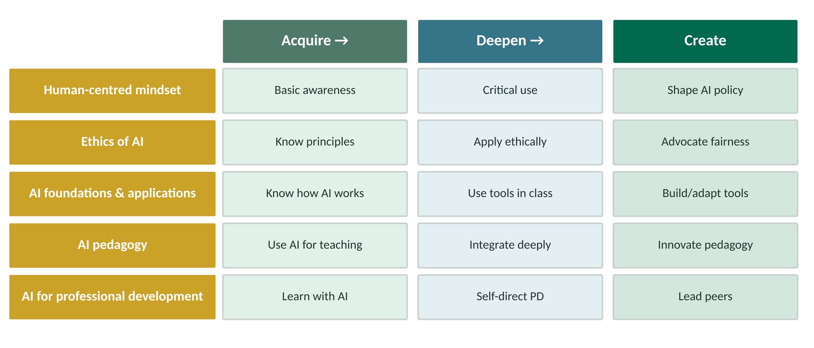
Figure 4. UNESCO AI Competency Framework for Teachers (2024): five dimensions and three progression levels. Cell texts are summaries.
UNESCO’s stance is human-centred AI: AI should augment, not replace, teachers and human relationships.
Teacher framework dimensions: human-centred mindset, ethics of AI, AI foundations and applications, AI pedagogy, AI for professional development. Levels: Acquire, Deepen, Create.
The 2025 Santiago Consensus on teachers asks governments to adopt the AI Competency Framework for Teachers (Chapter 11).
4.2 What the evidence says: OECD Digital Education Outlook 2026
The OECD Digital Education Outlook 2026: Exploring Effective Uses of Generative AI in Education (January 2026) is the most important recent evidence review. Its central finding is a distinction between performance and learning (OECD, 2026b):
Students using general-purpose chatbots often produce better work, but the advantage disappears or even reverses when AI is removed, for example in exams.
Offloading thinking to chatbots can cause "metacognitive laziness", reducing engagement and long-term skill development.
GenAI tools designed for learning (for example, AI tutors that give hints instead of answers, or AI that supports structured group argumentation) show more lasting benefits.
According to TALIS 2024, about 37% of lower-secondary teachers used AI in their work; 57% of users said it helped with lesson planning, and 72% worried about academic integrity.
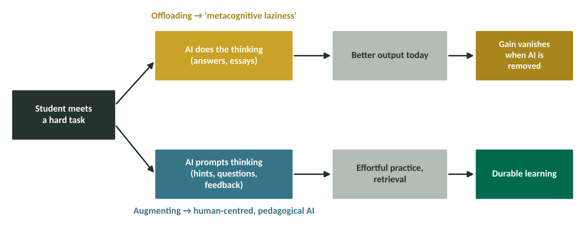
Figure 5. Two ways GenAI can be used: offloading thinking versus augmenting it
The OECD recommends: (1) human-centred use that enriches rather than replaces cognitive effort; (2) investment in rigorously evaluated educational AI; (3) policy for trustworthy AI (privacy, safety, bias, transparency, age-appropriateness); and (4) inclusive infrastructure and teacher professional learning.
4.3 Uses, risks and responses
Table 4. GenAI in education at a glance
| Opportunities | Risks | Sensible responses |
|---|---|---|
Personalised tutoring and feedback at scale Lesson planning, question generation, rubrics Support for learners with disabilities and second-language learners Administrative time saved |
Plagiarism and academic dishonesty Hallucinations (confident but false answers) Bias and cultural misrepresentation (weak Bangla content) Data privacy, surveillance Widening digital divide Deskilling of teachers and learners |
Redesign assessment (oral defence, process portfolios, in-class writing) Teach AI literacy and verification Clear institutional AI policies (allowed / allowed with disclosure / not allowed) Keep humans in the loop Invest in teacher AI competency |
AI detectors are unreliable and can unfairly flag non-native English writers (Liang et al., 2023), so many universities now focus on assessment redesign instead of detection. Scholars such as Selwyn (2024) warn against "AI hype" and remind us that past technologies (radio, TV, MOOCs) promised revolutions that did not arrive. Regulation is growing: the EU AI Act (2024) classifies AI used for admissions, assessment and proctoring as "high-risk".
Bangladesh’s 2026 government plans include "One Teacher, One Tab", multimedia classrooms, free Wi-Fi in institutions, and making digital literacy, AI awareness and cyber safety mandatory at school level in partnership with the ICT Division. Challenges: device and connectivity gaps between urban and rural schools, limited Bangla-language AI resources, and no comprehensive national AI-in-education policy yet. Universities (for example, through UGC guidance) are beginning to set rules on AI use in assignments and theses.
The "age 13" suggestion and the three level names (Acquire/Deepen/Create; Understand/Apply/Create) come from the UNESCO PDFs; confirm the wording on unesdoc.unesco.org. Check whether UGC or the Ministry of Education has issued a formal AI policy since November 2026.
5. Phones, Screens and Digital Wellbeing
Chapter summary
Alongside AI, the most visible global policy trend of 2023–2026 is restricting smartphones in schools . UNESCO’s 2023 GEM Report, Technology in Education: A Tool on Whose Terms? , concluded that there is little robust evidence of technology’s added value in many settings, warned about distraction, and recommended that technology be used only where it…
Alongside AI, the most visible global policy trend of 2023–2026 is restricting smartphones in schools. UNESCO’s 2023 GEM Report, Technology in Education: A Tool on Whose Terms?, concluded that there is little robust evidence of technology’s added value in many settings, warned about distraction, and recommended that technology be used only where it improves learning. (Links to ED 503 and PC 113.)
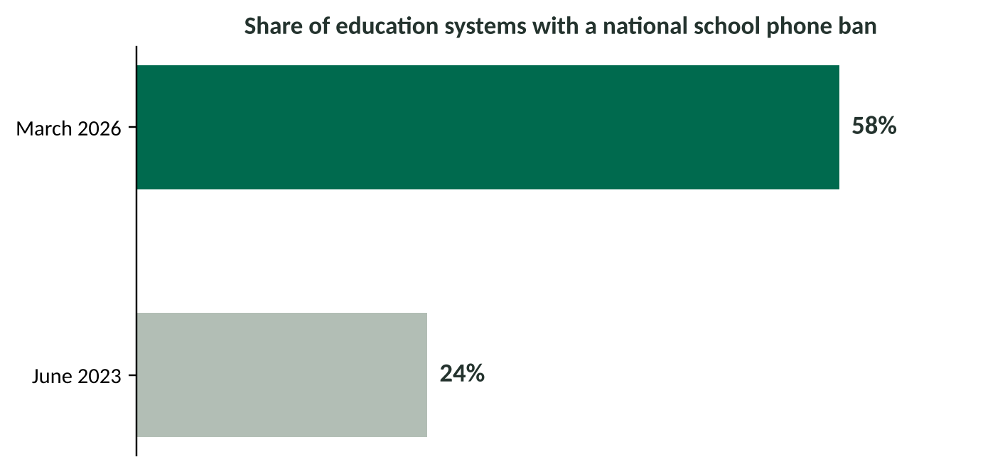
Figure 6. Share of education systems with a national law or policy banning phones in school
Source: UNESCO GEM Report phone-ban tracker, as reported in March 2026 (114 education systems, 58%).
In June 2023 about 24% of countries had a national school phone ban; by March 2026 the figure was about 58% (114 education systems).
Examples: the Netherlands, France, Italy, Finland, Sweden (from August 2026), Brazil, China, and many US states; England issued guidance; Australian states banned phones in public schools.
Evidence is mixed but growing. A large randomised trial in Odisha, India (about 17,000 college students) found that collecting phones during class raised grades by about 0.09 standard deviations overall and 0.16 SD for lower-achieving students (reported in Hendrick, 2026). PISA 2025 links leisure device use at school with lower scores.
Jonathan Haidt’s The Anxious Generation (2024) popularised the claim that smartphones and social media drove a youth mental-health crisis; critics (for example Odgers, 2024) argue the causal evidence is weaker. Present both sides in an exam answer.
Digital wellbeing: healthy, balanced and safe use of digital technologies.
Digital citizenship: responsible, ethical participation online, including privacy, safety and respectful communication.
Screen time vs screen use: researchers increasingly argue that what a child does on screen matters more than the total minutes.
Mobile phone use among Bangladeshi adolescents rose sharply during COVID-19 closures. Several board officials explaining the poor HSC 2026 results mentioned students’ phone use and dependence on coaching. A balanced policy would combine in-class restrictions with digital literacy teaching, since phones are also many rural learners’ only access to online resources.
6. The Science of Learning
Chapter summary
The "science of learning" (also called cognitive science in the classroom or learning sciences ) applies findings from cognitive psychology and neuroscience to teaching. It is one of the strongest movements in teacher education today, especially in England, Australia and the US, and is now entering South Asian teacher training.
This chapter covers: Core principles; Rosenshine’s Principles of Instruction; Recent research to cite (2025–2026).
The "science of learning" (also called cognitive science in the classroom or learning sciences) applies findings from cognitive psychology and neuroscience to teaching. It is one of the strongest movements in teacher education today, especially in England, Australia and the US, and is now entering South Asian teacher training. (Links to PC 113 Educational Psychology.)
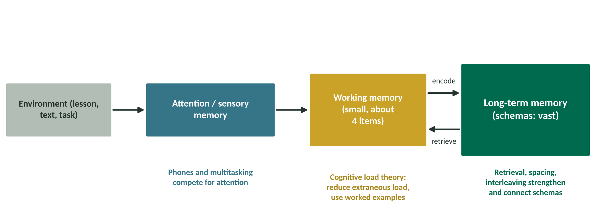
Figure 7. A simplified model of memory and the strategies that act on each stage (after Atkinson & Shiffrin, 1968; Sweller, 1988)
6.1 Core principles
Table 5. Principles from the science of learning
| Principle | What it says | Classroom use |
|---|---|---|
| Cognitive load theory (Sweller, 1988) | Working memory is small; learning fails when it is overloaded. Reduce extraneous load, manage intrinsic load, foster germane processing. | Worked examples, step-by-step instructions, remove clutter from slides, teach in small steps. |
| Retrieval practice (Roediger & Karpicke, 2006) | Recalling information strengthens memory more than rereading (the "testing effect"). | Low-stakes quizzes, brain dumps, flashcards, exit tickets. |
| Spaced practice (Ebbinghaus; Cepeda et al., 2006) | Learning spread over time lasts longer than massed "cramming". | Revisit topics after days and weeks; cumulative tests. |
| Interleaving (Rohrer & Taylor, 2007) | Mixing problem types improves the ability to choose the right method. | Mixed practice sets in maths and science. |
| Dual coding (Paivio, 1971; Mayer, 2009) | Words plus well-chosen visuals help memory. | Diagrams with narration; avoid reading slides aloud. |
| Elaboration and concrete examples | Asking "why" and "how" and linking to examples deepens understanding. | Self-explanation prompts. |
| Desirable difficulties (Bjork, 1994) | Some effort during learning (retrieval, spacing, variation) improves long-term retention even if it feels harder. | Do not over-scaffold; let students struggle productively. |
| Metacognition and self-regulation | Learners who plan, monitor and evaluate their learning do better. EEF toolkit rates this one of the highest-impact, lowest-cost approaches (about +7 months). | Teach planning, monitoring and evaluation explicitly. |
6.2 Rosenshine’s Principles of Instruction
Barak Rosenshine’s (2012) Principles of Instruction combine cognitive science, classroom research and expert teacher studies into ten principles that are now widely taught: begin with a short review; present new material in small steps; ask many questions; provide models (worked examples); guide student practice; check for understanding; obtain a high success rate (about 80%); provide scaffolds for difficult tasks; require independent practice; and engage in weekly and monthly review.
6.3 Recent research to cite (2025–2026)
A 2025 meta-analysis of pre-questions (55 studies, about 12,000 participants) found strong effects on remembering the questioned material, especially with feedback, but little effect on new material (Educational Psychology Review, 2025).
Retrieval practice benefits are smaller with complex, real texts and with strong explanations: one 2025 study with 213 undergraduates found no advantage over rereading for a journal article, warning against treating retrieval as a magic bullet (Instructional Science, 2025).
Kalyuga (2025) proposed adding "explicit intention to learn" as a principle in cognitive load theory.
A PISA 2022 re-analysis of 507,588 students in 74 countries found growth mindset was positively linked to achievement in 50 countries, with socio-economic status moderating the link (PLOS ONE, 2025). Earlier meta-analyses found growth-mindset interventions have small average effects (Sisk et al., 2018; Macnamara & Burgoyne, 2023).
Popular but unsupported ideas you should not repeat: "learning styles" (matching teaching to visual/auditory/kinaesthetic learners: no good evidence; Pashler et al., 2008); "we only use 10% of our brain"; "left-brain vs right-brain learners"; and "Brain Gym" exercises improve learning. Howard-Jones (2014) showed that a majority of teachers in several countries believe some of these myths.
Explain cognitive load theory and give two classroom implications.
Distinguish retrieval practice from rereading, and spaced from massed practice.
Critically evaluate "learning styles" as a neuromyth.
Compare explicit (direct) instruction with inquiry-based learning; mention Kirschner, Sweller and Clark’s (2006) critique of minimally guided instruction and Kapur’s productive failure as a middle path.
7. Newer Theories and Pedagogical Approaches
Chapter summary
The B.Ed and M.Ed syllabi cover classical theorists (Piaget, Vygotsky, Bruner, Dewey, Skinner, Bloom, Gagné). Examiners often ask about newer ideas to test whether a student reads beyond the textbook.
Key terms:
- Connectivism (Siemens, 2005): "Learning is a process that occurs within nebulous environments of shifting core elements… focused on connecting specialised information sets." In plain words: in a digital age, knowing where to find and how to connect knowledge matters as…
The B.Ed and M.Ed syllabi cover classical theorists (Piaget, Vygotsky, Bruner, Dewey, Skinner, Bloom, Gagné). Examiners often ask about newer ideas to test whether a student reads beyond the textbook. The table below gives the "must know" set with the key name and year. (Links to PC 113, PC 115, PC 120, ED 503.)
Table 6. Newer theories and approaches to know
| Theory or approach | Key figure(s), year | Core idea in one line |
|---|---|---|
| Connectivism | George Siemens (2005); Stephen Downes | Learning is the ability to build and navigate networks of people, information and technology. |
| Heutagogy | Hase & Kenyon (2000) | Self-determined learning: learners decide what and how to learn (beyond andragogy). |
| Productive failure | Manu Kapur (2008, 2016) | Let students attempt problems before instruction; the struggle prepares them to learn the concept. |
| Self-determination theory | Deci & Ryan (1985, 2000) | Motivation grows when needs for autonomy, competence and relatedness are met. |
| Visible Learning | John Hattie (2009; 2023 "The Sequel") | Synthesis of meta-analyses: effect sizes above 0.40 worth attention; teacher clarity and feedback high. |
| Culturally responsive / sustaining pedagogy | Gloria Ladson-Billings (1995); Django Paris (2012) | Teaching that values and sustains students’ languages and cultures. |
| Translanguaging | Ofelia García (2009) | Bilingual learners use their whole language repertoire; teachers can allow it strategically. |
| Critical pedagogy (renewed) | Paulo Freire (1970); bell hooks (1994) | Education for critical consciousness and freedom; renewed in debates on decolonising curricula. |
| TPACK and SAMR | Mishra & Koehler (2006); Puentedura (2006) | Teachers need technology, pedagogy and content knowledge together; tech use from substitution to redefinition. |
| Universal Design for Learning | CAST (Rose & Meyer, 2002; v3.0 2024) | Design for learner variability from the start (Chapter 9). |
| Social-emotional learning | CASEL (1994; framework 2020) | Five SEL competencies taught alongside academics (Chapter 9). |
| Phenomenon-based learning | Finland national core curriculum (2014/2016) | Study real-world phenomena across subjects in multidisciplinary modules. |
| Flipped and blended learning | Bergmann & Sams (2012); Garrison & Kanuka (2004) | Content online before class; class time for active learning. |
| Microlearning and gamification | Various (2010s–) | Short focused units; game elements for motivation. |
| Embodied cognition | Wilson (2002); Glenberg (2010) | Thinking is grounded in bodily action and perception; gestures and movement aid learning. |
| Positive education | Seligman et al. (2009); PERMA model | Teach wellbeing skills alongside academic skills. |
Connectivism (Siemens, 2005): "Learning is a process that occurs within nebulous environments of shifting core elements… focused on connecting specialised information sets." In plain words: in a digital age, knowing where to find and how to connect knowledge matters as much as knowing facts.
Heutagogy: the study of self-determined learning. Pedagogy is teacher-directed, andragogy is self-directed within a teacher’s frame, and heutagogy lets the learner set the goals and path. It suits lifelong and online learning.
There is a long-running debate between explicit instruction (supported by cognitive load theory and Rosenshine) and constructivist/inquiry approaches (supported by Dewey, Bruner and project-based learning). Current consensus leans to "explicit for novices, more open for experts" (the expertise reversal effect, Kalyuga et al., 2003) and to a sequence: explicit teaching → guided practice → open application.
8. Competencies, Future Skills and Education 4.0
Chapter summary
Most curriculum reforms of the last decade, including Bangladesh’s 2021 framework, are competency-based : they define what learners should be able to do with knowledge, not just what they should know. (Links to PC 120 Introduction to Curriculum and ED 502.)
This chapter covers: Key frameworks; WEF Future of Jobs Report 2025.
Key terms:
- Competency: an integrated combination of knowledge, skills, attitudes and values applied to perform effectively in a context (OECD, 2019).
Most curriculum reforms of the last decade, including Bangladesh’s 2021 framework, are competency-based: they define what learners should be able to do with knowledge, not just what they should know. (Links to PC 120 Introduction to Curriculum and ED 502.)
Competency: an integrated combination of knowledge, skills, attitudes and values applied to perform effectively in a context (OECD, 2019).
Competency-based education (CBE): learners progress by demonstrating mastery of competencies, with flexible time and authentic assessment.
21st-century skills / 4Cs: critical thinking, creativity, collaboration and communication (P21 Framework).
Transferable skills: skills useful across contexts, such as problem solving, self-management and digital literacy.
8.1 Key frameworks
OECD Learning Compass 2030 (2019): learners need knowledge, skills, attitudes and values to develop student agency and co-agency with teachers; "transformative competencies" are creating new value, reconciling tensions and dilemmas, and taking responsibility.
WEF Education 4.0 (2020): eight characteristics of learning for the Fourth Industrial Revolution (see the figure below).
UNESCO’s Futures of Education report, *Reimagining Our Futures Together: A New Social Contract for Education* (2021): calls for education as a global common good, built on cooperation, solidarity and care for the planet.
Delors Report pillars (1996) remain the foundation: learning to know, to do, to live together and to be (with "learning to become" added in later UNESCO work).
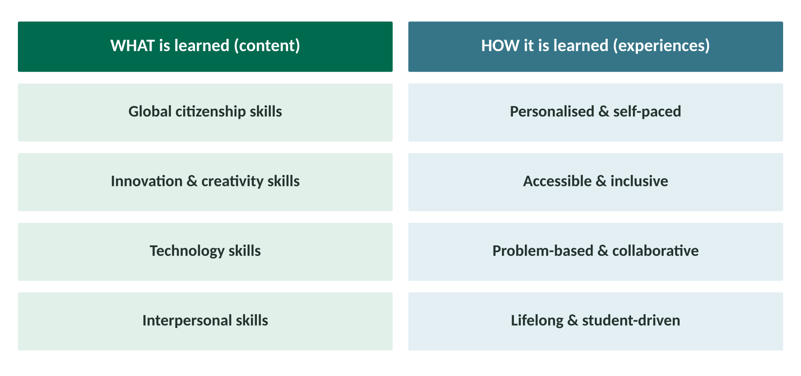
Figure 8. World Economic Forum Education 4.0: four content and four experience shifts (WEF, 2020)
8.2 WEF Future of Jobs Report 2025
The Future of Jobs Report 2025 surveyed over 1,000 employers. They expect 39% of workers’ core skills to change by 2030 (down from 44% in 2023). AI and big data, networks and cybersecurity and technological literacy are the fastest-growing skills, followed by creative thinking, resilience, flexibility and agility, and curiosity and lifelong learning. Manual dexterity is the fastest-declining (WEF, 2025).
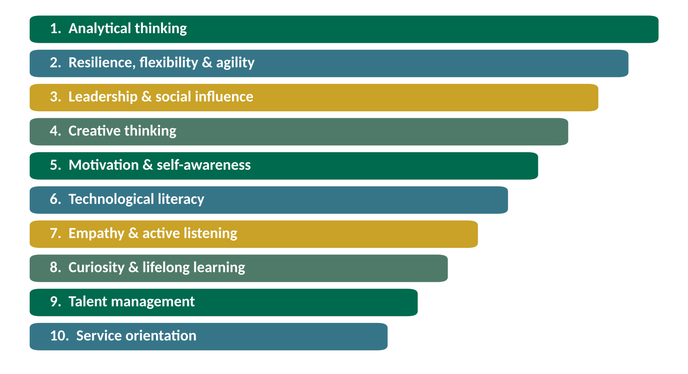
Figure 9. Top ten core skills employers rated most important in 2025 (WEF, 2025)
Define competency-based curriculum and compare it with a content-based curriculum.
What is "student agency" in the OECD Learning Compass?
Explain why the WEF predicts that analytical thinking and AI literacy will be core skills by 2030, and what this means for teacher education.
Critics warn that skills frameworks written by business forums can turn education into "human capital production" and neglect citizenship, culture and personal flourishing (Biesta, 2010, on qualification, socialisation and subjectification). Competency-based reforms also need major teacher training and assessment capacity, which was one reason Bangladesh’s 2021 framework faltered.
9. Inclusion, Equity and Wellbeing: UDL 3.0, SEL and Beyond
Chapter summary
Inclusion has moved from a special-education topic to a whole-system principle: every school should plan for the full diversity of learners. (Links to PC 127 Inclusion in Education, PC 122 Gender Education and PC 121 Value Education.)
This chapter covers: Universal Design for Learning 3.0; Social and emotional learning (SEL); Other inclusion and equity trends.
Inclusion has moved from a special-education topic to a whole-system principle: every school should plan for the full diversity of learners. (Links to PC 127 Inclusion in Education, PC 122 Gender Education and PC 121 Value Education.)
9.1 Universal Design for Learning 3.0
Universal Design for Learning (UDL), developed by CAST, asks teachers to design lessons that work for the widest range of learners from the start, instead of retrofitting adjustments. UDL Guidelines 3.0 were released in July 2024 after a four-year community review. The three principles remain engagement (the why), representation (the what) and action and expression (the how), but version 3.0:
changes the goal from "expert learners" to "learner agency" (purposeful and reflective, resourceful and authentic, strategic and action-oriented);
adds attention to identity, belonging, joy and play, and to biased or exclusionary practices;
stresses collective as well as individual learning and draws on culturally sustaining pedagogy.
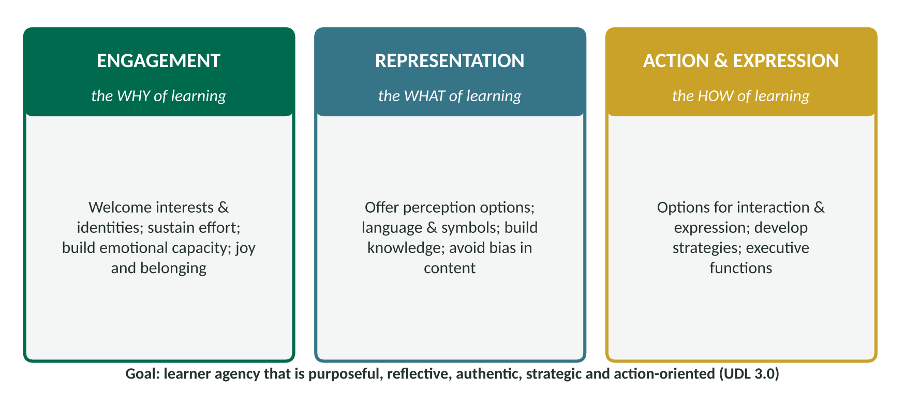
Figure 10. The three principles of Universal Design for Learning, version 3.0 (CAST, 2024)
9.2 Social and emotional learning (SEL)
SEL is "the process through which all young people and adults acquire and apply the knowledge, skills and attitudes to develop healthy identities, manage emotions and achieve personal and collective goals, feel and show empathy for others, establish and maintain supportive relationships, and make responsible and caring decisions" (CASEL, 2020). A widely cited meta-analysis of 213 programmes found SEL improved academic achievement by about 11 percentile points (Durlak et al., 2011).
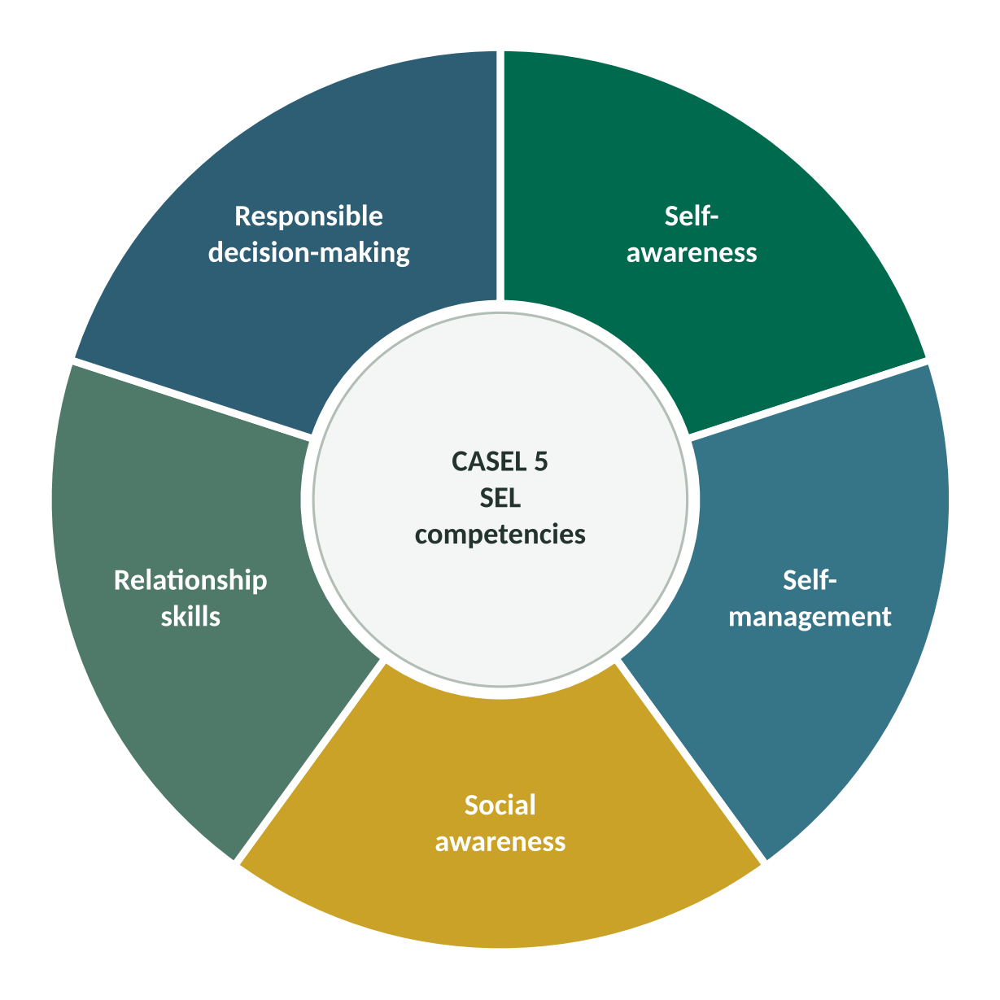
Figure 11. CASEL’s five core SEL competencies
9.3 Other inclusion and equity trends
Table 7. Inclusion and equity trends
| Trend | What to know |
|---|---|
| Mental health and wellbeing | Post-COVID rise in student anxiety and depression; school counsellors, whole-school approaches and teacher wellbeing are growing priorities. |
| Trauma-informed teaching | Recognising how adverse childhood experiences affect behaviour and learning; safe, predictable classrooms. |
| Mother-tongue-based multilingual education | UNESCO: about 40% of learners are not taught in a language they speak or understand. Start in the home language and bridge. |
| Gender equality, both ways | Girls still excluded in some regions (e.g., Afghanistan’s ban on girls’ secondary and higher education since 2021–22), while boys now lag in many middle-income countries, including in Bangladesh’s secondary results. |
| Disability inclusion | UNCRPD Article 24; inclusive education laws rose from 1% to 24% of countries since 2000 (GEM 2026). Assistive technology and AI captioning are new tools. |
| Refugee and crisis education | Education in emergencies; Bangladesh hosts about one million Rohingya refugees, with Myanmar-curriculum learning centres in Cox’s Bazar. |
The 2026 budget promised free education for girls up to undergraduate level, inclusive education with assistive technology for children with disabilities, and expanded mid-day meals. In HSC 2026, girls passed at a higher rate than boys for the sixth straight year (55.45% vs 47.14% in the general boards), raising the emerging issue of boys’ disengagement. The Persons with Disabilities Rights and Protection Act 2013 and the National Education Policy 2010 already promise inclusion; implementation is the gap.
10. Assessment Reform
Chapter summary
Around the world, systems are trying to reduce the dominance of high-stakes, memory-based public examinations and build balanced assessment systems . Two new pressures have accelerated this: GenAI, which makes many take-home tasks unreliable, and competency-based curricula, which need assessment of performance, not recall.
Around the world, systems are trying to reduce the dominance of high-stakes, memory-based public examinations and build balanced assessment systems. Two new pressures have accelerated this: GenAI, which makes many take-home tasks unreliable, and competency-based curricula, which need assessment of performance, not recall. (Links to PC 117 and EER 582.)
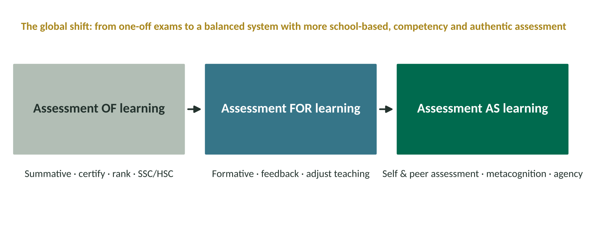
Figure 12. Assessment of, for and as learning (Earl, 2003; Black & Wiliam, 1998)
Table 8. Assessment trends
| Trend | Description |
|---|---|
| Formative assessment / assessment for learning | Black and Wiliam’s (1998) "Inside the Black Box" showed large gains from formative feedback. Dylan Wiliam’s five strategies: clarify learning intentions; elicit evidence; give feedback that moves learners forward; activate peers; activate students as owners of their learning. |
| School-based assessment (SBA) | Teachers assess continuously across the year; often combined with fewer, shorter public exams. |
| Competency and performance assessment | Projects, portfolios, practicals and rubrics that show what learners can do. |
| Authentic and "AI-resilient" assessment | Real-world tasks, oral defences (viva), in-class writing, process evidence (drafts, reflections), and assessments that require personal context. |
| Digital and adaptive testing | Computer-based tests that adjust difficulty; PISA has been computer-based since 2015 and adaptive since 2018. |
| Item banks and blueprints | Calibrated question banks and test specification tables to improve validity and reduce rote "suggestion" culture. |
| Programmatic assessment | Many low-stakes data points combined for high-stakes decisions (from medical education). |
| Two-lane approach to AI (Univ. of Sydney, 2024) | "Lane 1": secure, supervised assessment of learning; "Lane 2": open assessment where AI use is allowed and taught. |
Bangladesh has swung between models. The 2021 curriculum framework removed exams up to Grade 3, abolished PSC (2022) and JSC/JDC (2023), and introduced continuous assessment with behavioural indicators and a year-end summative assessment, which parents and teachers found confusing. After its withdrawal in 2024, the traditional exam system returned. In February 2026 a consultation committee recommended limiting SSC written exams to five core subjects (Bangla, English, mathematics, science and social science), with ICT, religion, physical education and arts assessed by schools. The new government’s 12-point agenda promises item banks, test blueprints, moderation and school-based assessment guidelines in phases, while the reintroduction of a primary scholarship examination was criticised by educationists.
Compare assessment of, for and as learning with examples.
Why did continuous assessment under the 2021 curriculum face resistance in Bangladesh? (Teacher capacity, unclear indicators, parental trust in exams, coaching culture, short preparation time.)
How should universities redesign assessment in the age of GenAI?
11. Teachers and the Teaching Profession
Chapter summary
Teachers are the single most important school-level factor in learning, and the profession faces a global crisis of shortage, status and wellbeing. (Links to ED 502 and PC 118.)
This chapter covers: The shortage; UN High-Level Panel and the Santiago Consensus; Professional learning trends.
Teachers are the single most important school-level factor in learning, and the profession faces a global crisis of shortage, status and wellbeing. (Links to ED 502 and PC 118.)
11.1 The shortage
UNESCO’s Global Report on Teachers (2024) estimated that 44 million additional teachers are needed by 2030 to achieve universal primary and secondary education, 15 million of them in sub-Saharan Africa. By the time of the 2025 World Summit, education leaders were citing a need for about 50 million teachers, with attrition doubling in some regions since 2015.
11.2 UN High-Level Panel and the Santiago Consensus
In February 2024 the UN Secretary-General’s High-Level Panel on the Teaching Profession issued 59 recommendations on dignity, status, pay, working conditions, professional development and teacher participation in policy. In August 2025 (28–29 August), UNESCO and Chile hosted the first World Summit on Teachers in Santiago de Chile, which adopted the Santiago Consensus. Its six priority areas are:
1. Comprehensive teacher policies covering the whole career, from recruitment to retirement;
2. Lifelong professional development that links initial training, induction, mentoring and continuing development;
3. Social dialogue: permanent participation of teachers and unions in policymaking;
4. Sustainable financing, in line with SDG target 4.c (supply of qualified teachers);
5. Future-ready teaching, including digital and AI competencies, and adoption of UNESCO’s AI Competency Framework for Teachers;
6. Inclusion and equity, including a more diverse teaching workforce.
The Consensus also stated that education technologies must serve humanity and should not undermine the essential role of human interaction in education.
11.3 Professional learning trends
Teacher professional learning communities (PLCs) and lesson study (Japanese jugyou kenkyuu) replace one-off workshops.
Instructional coaching: a meta-analysis by Kraft, Blazar and Hogan (2018) found coaching improved instruction (0.49 SD) and achievement (0.18 SD).
Teacher wellbeing and workload: TALIS 2024 and national surveys show high stress; AI may reduce paperwork.
Teacher agency and research-informed practice: teachers as researchers (Stenhouse, 1975), action research and evidence hubs such as the UK’s Education Endowment Foundation (EEF) Teaching and Learning Toolkit.
In 2026 the Education Minister told parliament that at least 92,081 teacher posts were vacant, and around 34,000–35,000 primary schools lacked head teachers (press reports, May 2026). Recruitment runs through the NTRCA for non-government secondary schools and colleges and through the DPE for government primary schools. Teacher training reforms promised in 2026 include mandatory subject knowledge and assessment literacy, "One Teacher, One Tab", and strengthening teacher training colleges (TTCs) and PTIs. Low pay, MPO-related protests and heavy dependence on private tuition remain sensitive issues.
Vacancy numbers and training plans are from press reports (Bonik Barta, Feb 2026; The Daily Star, May 2026). Check the latest NTRCA circular and Ministry statements.
12. Climate, Green and Global Citizenship Education
Chapter summary
Climate change is now treated as an education issue, not only an environmental one. (Links to PC 123 Environmental Education and ED 501.)
Climate change is now treated as an education issue, not only an environmental one. (Links to PC 123 Environmental Education and ED 501.)
Education for Sustainable Development (ESD) for 2030 (UNESCO, 2020) and the Berlin Declaration on ESD (2021) call for ESD to be a core component of all education systems by 2025.
The Greening Education Partnership, launched at the 2022 Transforming Education Summit, has four pillars: greening schools, greening curriculum, greening teacher training and education systems, and greening communities. UNESCO published a Greening Curriculum Guidance (2024).
A UNESCO review found that nearly half of national curricula made no reference to climate change (UNESCO, 2021).
Global Citizenship Education (GCED) and the 2023 UNESCO Recommendation on Education for Peace, Human Rights and Sustainable Development (replacing the 1974 Recommendation) define what learners need for a just, peaceful and sustainable world.
Climate-resilient schools: extreme heat and floods are closing schools; in 2024 Bangladesh closed schools during record heatwaves, and many schools in the north and north-east flood every year.
Bangladesh is among the most climate-vulnerable countries. Climate change and disaster topics appear in science and Bangladesh and Global Studies textbooks. Researchers have called for a dedicated climate-education strategy, heat-safe school calendars, and climate-resilient school buildings in coastal and haor areas.
The "nearly half of curricula" figure comes from UNESCO’s 2021 Learn for Our Planet review; newer monitoring may update it.
13. Higher Education Trends
Chapter summary
As you are applying to teach at a university, expect questions about higher education itself. (Links to ED 502 and ED 501.)
As you are applying to teach at a university, expect questions about higher education itself. (Links to ED 502 and ED 501.)
Table 9. Higher education trends
| Trend | Key points |
|---|---|
| Outcome-based education (OBE) | Programmes defined by programme and course learning outcomes, aligned with teaching and assessment (constructive alignment, Biggs, 1996). In Bangladesh, OBE curricula are promoted by the UGC and required for accreditation by the Bangladesh Accreditation Council (BAC, Act 2017). |
| Qualifications frameworks | The Bangladesh National Qualifications Framework (BNQF) sets levels from school to doctorate; links to recognition of prior learning and TVET. |
| Micro-credentials and stackable learning | Short, certified units that can build into degrees; UNESCO and the EU have issued definitions (EU Council Recommendation, 2022). |
| GenAI and academic integrity | Universities are writing AI policies, redesigning assessment and teaching AI literacy (Chapter 4). |
| Internationalisation and rankings | Growth of transnational education; criticism of global rankings for distorting priorities. |
| Open science and open educational resources | UNESCO Recommendation on Open Science (2021) and on OER (2019). |
| Completion and employability | GEM 2026: six in ten university entrants never graduate globally. Graduate unemployment is a major concern in Bangladesh. |
| Academic freedom and governance | After 2024, debates on politicisation of campuses and appointment of vice-chancellors have been intense in Bangladesh. |
Be ready to explain constructive alignment and OBE with an example from a course you might teach (for example, writing a course learning outcome for PC 117 and showing how you would teach and assess it).
14. Bangladesh: Education News and Reforms, 2024–2026
Chapter summary
Bangladesh’s education system has gone through more policy turbulence between 2023 and 2026 than in any period since the 1970s. Examiners will almost certainly ask about it.
This chapter covers: The rise and withdrawal of the competency-based curriculum; The new government’s agenda (2026); Budget FY2026–27; HSC 2026 results; Other issues to follow.
Bangladesh’s education system has gone through more policy turbulence between 2023 and 2026 than in any period since the 1970s. Examiners will almost certainly ask about it. Answer factually and without partisanship: describe what happened, give the educational arguments on each side, and propose a constructive way forward. (Links to PC 112 Education in Bangladesh, PC 120 and ED 502.)
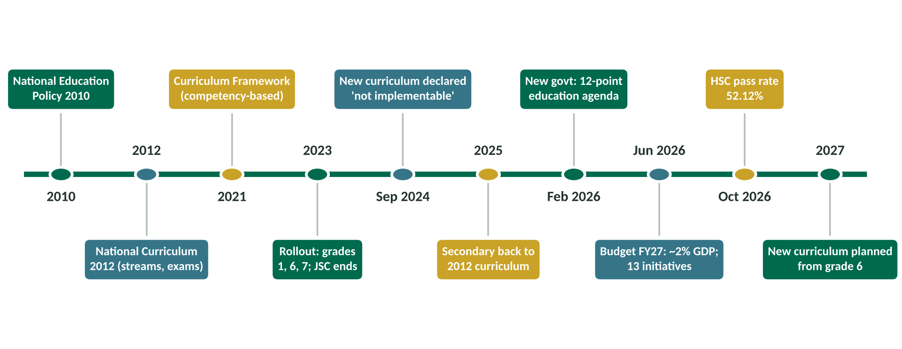
Figure 13. Bangladesh’s curriculum and policy timeline, 2010–2027
14.1 The rise and withdrawal of the competency-based curriculum
National Education Policy 2010 and the National Curriculum 2012 shaped the system for a decade: subject streams (science, humanities, business) from Grade 9, and public exams at Grades 5 (PSC), 8 (JSC/JDC), 10 (SSC) and 12 (HSC).
The National Curriculum Framework 2021 (often called "Curriculum 2022") introduced a competency-based, experiential model: no exams up to Grade 3, no PSC (dropped in 2022) or JSC (abolished 2023), no streams in Grades 9–10, ten learning areas, and continuous assessment with a year-end summative assessment. It was rolled out in Grades 1, 6 and 7 in 2023 and Grades 2, 3, 8 and 9 in 2024.
Criticism grew over teacher preparation, unclear assessment indicators, cost of activity materials, and parents’ fear that children were "not studying". After the July–August 2024 mass uprising and change of government, the Secondary and Higher Education Division declared the new curriculum "not implementable" (notification of 1 September 2024).
For 2025, secondary education returned to the 2012 curriculum with revised textbooks, streams and traditional exams, while primary continued with revised books based on the 2021/2022 framework.
In July 2025 the NCTB said a new national curriculum would start at secondary level from 2027, beginning with Grade 6 and adding one grade per year. It reviewed models from about 16 countries (including Australia and the US, where assessment is continuous and school-based) and planned to blend elements of the 2012 and 2022 curricula (Dhaka Tribune, 17 July 2025).
Most education researchers agreed the goals of the 2021 framework (less rote learning, more experiential and competency-based learning) were sound, but the implementation was rushed: limited piloting, short teacher training, and weak communication with parents. Fullan’s (2007) change theory reminds us that reform succeeds only when teachers understand and own it. The lesson for the 2027 curriculum: pilot, train, communicate, and keep it stable. Constant resets (2012 → 2021 → 2012 → 2027) themselves harm learning.
14.2 The new government’s agenda (2026)
A new elected government took office in February 2026, with Tarique Rahman as Prime Minister, Dr A N M Ehsanul Hoque Milon as Education Minister and Bobby Hajjaj as State Minister. On 19 February 2026 the Education Ministry presented a 12-point reform agenda in three phases:
Table 10. Bangladesh’s 2026 education reform agenda
| Theme | Main plans (as reported) |
|---|---|
| Financing | Raise education spending to 5% of GDP in phases; fix slow use of development budgets (about 53% of secondary development funds were reported unspent). |
| Teachers | Strengthen training; mandatory subject knowledge and assessment literacy; "One Teacher, One Tab"; fill vacancies. |
| Curriculum | Review the national curriculum; sports, physical and mental health education and arts compulsory from Class IV; new subjects such as "Joyful Learning" and "Sports and Culture"; content on the July 2024 uprising. |
| Skills | Technical education from Grade 6 / secondary for all students; credit bridges with BTEB and NSDA; industry internships and career centres. |
| Languages | A compulsory third language in phases (e.g., Arabic, Chinese, Japanese, Korean, French, German) alongside Bangla and English. |
| Digital | Digital literacy, AI awareness and cyber safety mandatory; robotics and maker corners in each upazila; free Wi-Fi in institutions. |
| Assessment | Item banks, blueprints, moderation, school-based assessment; exam reform in phase 3 (12–36 months). |
| Equity | Nationwide mid-day meals; free girls’ education to undergraduate level; inclusive education and assistive technology; sanitation for girls. |
| Madrasa | Modernise with science, maths, English and ICT; recognition of Qawmi certificates; Minimum Learning Standards. |
| Accountability | Public dashboard and school report cards; university research grants. |
Commentators welcomed the ambition but questioned financing, sequencing and coherence. Professor Manzoor Ahmed (BRAC University) described the initiatives as "fragmented, separate and partial", and CAMPE’s Rasheda K. Choudhury warned that "only increasing the budget will not be enough" (The Daily Star, 28 May 2026).
14.3 Budget FY2026–27
The budget placed on 11 June 2026 allocated about Tk 1.37 lakh crore (Tk 1.37 trillion) to education and technology, about 14.6% of the total budget and close to 2% of GDP, up from a revised 1.39% of GDP in FY2025–26. The three education divisions received about Tk 1.22 lakh crore (bdnews24.com, 2026; Dhaka Tribune, 2026). This is a real increase, but still below the international benchmark of 4–6% of GDP.
14.4 HSC 2026 results
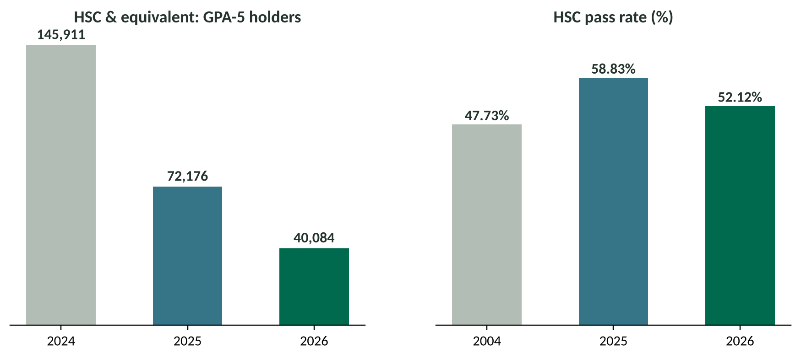
Figure 14. HSC and equivalent results: GPA-5 holders, 2024–2026, and pass rates (Prothom Alo; The Daily Star)
Results published on 31 October 2026: pass rate 52.12% across 11 boards (58.83% in 2025), the lowest in about two decades; 40,084 GPA-5 holders (about 72,000 in 2025 and 145,911 in 2024).
Pass rates fell in all nine general boards; humanities 42%, business 51%, science 73%; English and ICT results fell widely. Girls 55.45% vs boys 47.14% (general boards).
Explanations offered: exams on the full syllabus and full marks for the first time since COVID-19, stricter script evaluation, identical question papers across boards, unrecovered learning loss, teacher shortages, irregular classes, coaching dependence and phone use.
Avoid simply blaming students. A balanced answer: (1) lower pass rates partly reflect more honest marking after years of grade inflation, which restores credibility; (2) they also reveal a real learning deficit carried from COVID-19 closures and curriculum instability; (3) the remedy is classroom teaching quality, remedial support and teacher recruitment, not lowering standards again.
14.5 Other issues to follow
Teacher vacancies (92,000+), NTRCA recruitment, MPO and non-government teachers’ pay demands.
Coaching centres, guidebooks and the private tuition economy.
University governance after 2024; student politics; quality assurance (BAC accreditation, OBE).
Primary education: textbook delivery on 1 January, mid-day meals, a reintroduced scholarship exam, and World Bank-supported primary programmes.
TVET expansion and the target of higher technical enrolment.
Education in the Rohingya camps and in climate-vulnerable regions.
Names of office-holders, budget numbers and the 12-point agenda details come from newspapers (Bonik Barta, The Daily Star, Dhaka Tribune, bdnews24, Prothom Alo, Feb–Nov 2026). The two newspapers give slightly different HSC 2026 figures (52.12% all boards vs 51.62% in one report); the candidate counts support 52.12%. Check the Ministry of Education, NCTB, and Education Board websites for the latest official figures before an exam.
15. Exam and Viva Focus
University examinations in Education typically combine a written paper (MCQ and/or descriptive) with a viva voce. In the viva, examiners often begin with your thesis or area of interest and then move to current issues. Use this chapter to practise.
15.1 Quick facts sheet (memorise)
Table 11. Quick facts
| Item | Fact |
|---|---|
| Out-of-school children and youth | 273 million (GEM 2026); rising 7 years in a row |
| Teachers needed by 2030 | 44 million (UNESCO 2024); about 50 million cited at Santiago 2025 |
| Education finance benchmark | 4–6% of GDP and/or 15–20% of public expenditure (Education 2030 FfA) |
| PISA 2025 | 8 Sep 2026; ~91 systems; OECD maths 463, reading 461, science 482; lowest ever in maths and reading |
| PISA 2025 innovative domain | Learning in the Digital World |
| Top PISA systems | B-S-J-Z (China), Singapore, Macao, Chinese Taipei, Japan, Korea; Estonia best in Europe |
| UNESCO GenAI guidance | September 2023 (Miao & Holmes) |
| UNESCO AI competency frameworks | September 2024; teachers 5 dimensions × 3 levels; students 4 dimensions × 3 levels |
| OECD Digital Education Outlook | 2026, on GenAI: performance gains ≠ learning gains |
| School phone bans | ~24% of countries (2023) → ~58% / 114 systems (Mar 2026) |
| WEF Future of Jobs 2025 | 39% of core skills change by 2030; top skill: analytical thinking |
| UDL Guidelines 3.0 | CAST, July 2024; goal = learner agency |
| CASEL 5 | Self-awareness, self-management, social awareness, relationship skills, responsible decision-making |
| Santiago Consensus | World Summit on Teachers, Santiago de Chile, 28–29 Aug 2025; six priorities |
| UN HLP on Teaching Profession | February 2024; 59 recommendations |
| Bangladesh curriculum | 2021 framework rolled out 2023; declared not implementable Sep 2024; 2012 curriculum back 2025; new curriculum planned from Grade 6 in 2027 |
| Bangladesh budget FY27 | Education ≈ Tk 1.37 lakh crore, ≈14.6% of budget, ≈2% of GDP; target 5% of GDP |
| HSC 2026 | Pass 52.12%; GPA-5 40,084; girls ahead of boys |
15.2 Likely viva questions with answer points
Table 12. Viva questions and model answer points
| # | Question | Points to make |
|---|---|---|
| 1 | What are the most important global trends in education right now? | Name 4–5: learning crisis and foundational learning; AI and GenAI; phone restrictions and wellbeing; competency-based curricula and assessment reform; teacher shortage; inclusion and UDL; climate education. Give one source per trend. |
| 2 | What did PISA 2025 show? | Lowest OECD averages ever in reading and maths; 1 in 5 low performers in all subjects; East Asia leads; decline predates COVID; links to digital distraction. Bangladesh does not participate. |
| 3 | Should Bangladesh participate in PISA? | Pros: benchmark, data, reform pressure. Cons: cost, mismatch, test pressure. Middle path: strengthen national assessments first and consider PISA-style items. |
| 4 | How should teachers use ChatGPT and other GenAI tools? | Human-centred: use for planning, differentiation, feedback drafts; teach AI literacy; never let it replace students’ thinking; redesign assessment; protect privacy. Cite UNESCO 2023 and OECD 2026. |
| 5 | What is "metacognitive laziness"? | OECD 2026: offloading thinking to chatbots reduces effort and long-term learning; output improves but learning does not. |
| 6 | Explain UNESCO’s AI Competency Framework for Teachers. | 5 dimensions: human-centred mindset, ethics of AI, AI foundations and applications, AI pedagogy, AI for professional development; 3 levels: acquire, deepen, create. |
| 7 | Why did the 2021 curriculum fail in Bangladesh? | Sound goals but rushed implementation: little piloting, weak teacher training, unclear assessment, parental distrust, resource costs, political context of 2024. Lesson: pilot, train, communicate, sustain. |
| 8 | What is your view on the decline in HSC 2026 results? | Partly honest marking after grade inflation; partly real learning loss; solution = teaching quality, remedial support, teacher recruitment. |
| 9 | What is competency-based education? | Integration of knowledge, skills, attitudes and values to perform tasks; mastery-based progression; authentic assessment; example from curriculum. |
| 10 | What is learning poverty? | Share of 10-year-olds unable to read and understand a simple text (World Bank & UIS, 2019); ~70% in LMICs in 2022. |
| 11 | What is Teaching at the Right Level? | Pratham’s approach: group by learning level, teach basics intensively; GEEAP "great buy". |
| 12 | What is cognitive load theory? | Sweller: limited working memory; reduce extraneous load; worked examples; split-attention and redundancy effects. |
| 13 | Is "learning styles" a valid theory? | No: a neuromyth (Pashler et al., 2008). Better: use multiple modes for everyone (dual coding). |
| 14 | What is UDL, and what changed in UDL 3.0? | Design for variability; engagement, representation, action and expression; 3.0 aims at learner agency, adds identity, belonging, joy, anti-bias. |
| 15 | What is SEL and why does it matter? | CASEL 5; Durlak et al. (2011) +11 percentile points; wellbeing after COVID. |
| 16 | What is the Santiago Consensus? | World Summit on Teachers (Aug 2025): six priorities including career-long policy, PD, social dialogue, financing, AI competencies, inclusion. |
| 17 | How big is the global teacher shortage? | 44 million needed by 2030 (UNESCO 2024), about 50 million cited in 2025; Bangladesh 92,000+ vacant posts. |
| 18 | What is Education 4.0? | WEF (2020): 4 content shifts (global citizenship, innovation and creativity, technology, interpersonal skills) and 4 experience shifts (personalised, accessible, problem-based/collaborative, lifelong). |
| 19 | What are formative and summative assessment? | Black & Wiliam (1998); assessment for vs of learning; Wiliam’s five strategies; assessment as learning. |
| 20 | How can assessment be made "AI-resilient" in a university course? | In-class tasks, oral defence, drafts and reflections, personal or local data, two-lane approach, clear AI-use rules. |
| 21 | What is connectivism? | Siemens (2005): learning in networks; relevance for digital age; criticised as not a full learning theory. |
| 22 | What is outcome-based education? | Learning outcomes drive teaching and assessment; constructive alignment (Biggs); BAC and UGC require OBE curricula. |
| 23 | What is the Greening Education Partnership? | Launched at TES 2022; four pillars: greening schools, curriculum, teacher training/systems, communities. |
| 24 | How much does Bangladesh spend on education? | About 2% of GDP in FY2026–27 (up from 1.39% revised FY26), below the 4–6% benchmark; target 5%. |
| 25 | What would you change first in Bangladesh’s education system? | Pick one and justify with evidence: e.g., teacher recruitment and coaching-based training focused on foundational learning, with stable curriculum and fair assessment. |
Structure every answer: define → explain with a source and year → give a Bangladesh example → offer a balanced view or your recommendation.
Show you read beyond the syllabus: mention one recent report (GEM 2026, PISA 2025, OECD DEO 2026) by name.
Be politically neutral: describe policies by what they do; evaluate them on educational evidence.
Say "I am not sure of the exact figure, but…" rather than inventing a number.
15.3 Multiple-choice questions
1. The 2026 GEM Report focuses on:
(a) Technology in education (b) Leadership in education (c) Access and equity (d) Teachers
2. According to the 2026 GEM Report, the number of out-of-school children and youth is about:
(a) 127 million (b) 244 million (c) 273 million (d) 317 million
3. PISA 2025 results were released in:
(a) December 2025 (b) September 2026 (c) December 2026 (d) March 2026
4. The innovative domain of PISA 2025 is:
(a) Creative thinking (b) Global competence (c) Learning in the Digital World (d) Collaborative problem solving
5. Which system scored highest in PISA 2025 reading?
(a) Japan (b) Singapore (c) Estonia (d) Finland
6. The OECD average mathematics score in PISA 2025 was about:
(a) 489 (b) 472 (c) 463 (d) 501
7. UNESCO’s first global guidance on generative AI in education was published in:
(a) 2019 (b) 2021 (c) 2023 (d) 2025
8. Which is NOT a dimension of UNESCO’s AI Competency Framework for Teachers?
(a) AI pedagogy (b) Ethics of AI (c) AI system design (d) AI for professional development
9. The three progression levels of the UNESCO AI CFT are:
(a) Remember, apply, create (b) Acquire, deepen, create (c) Basic, intermediate, advanced (d) Novice, competent, expert
10. The OECD Digital Education Outlook 2026 warns that heavy chatbot use can cause:
(a) Digital amnesia (b) Metacognitive laziness (c) Learned helplessness (d) Cognitive dissonance
11. The Beijing Consensus (2019) is about:
(a) Teacher salaries (b) Artificial intelligence and education (c) Climate education (d) Higher education rankings
12. By March 2026, about what share of education systems had a national school phone ban?
(a) 10% (b) 24% (c) 58% (d) 90%
13. "Learning poverty" refers to children who at age 10:
(a) Are out of school (b) Cannot read and understand a simple text (c) Live below the poverty line (d) Have no textbooks
14. Teaching at the Right Level was developed by:
(a) BRAC (b) Pratham (c) CAMPE (d) UNICEF
15. Cognitive load theory was proposed by:
(a) John Sweller (b) Jerome Bruner (c) Robert Gagné (d) Albert Bandura
16. The "testing effect" is another name for:
(a) Spaced practice (b) Retrieval practice (c) Interleaving (d) Dual coding
17. Which is a neuromyth?
(a) Spacing improves retention (b) Retrieval strengthens memory (c) Teaching to learning styles improves learning (d) Working memory is limited
18. Connectivism is associated with:
(a) George Siemens (b) Malcolm Knowles (c) Lev Vygotsky (d) Paulo Freire
19. Heutagogy refers to:
(a) Teacher-directed learning (b) Self-determined learning (c) Learning of children (d) Learning through games
20. Productive failure is associated with:
(a) Manu Kapur (b) John Hattie (c) Dylan Wiliam (d) Carol Dweck
21. UDL Guidelines 3.0 were released by CAST in:
(a) 2018 (b) 2020 (c) 2024 (d) 2026
22. In UDL 3.0, the overall goal is:
(a) Expert learners (b) Learner agency (c) Mastery learning (d) Inclusive schools
23. Which is NOT one of the CASEL 5 competencies?
(a) Self-awareness (b) Relationship skills (c) Critical thinking (d) Responsible decision-making
24. According to the WEF Future of Jobs Report 2025, the share of core skills expected to change by 2030 is:
(a) 22% (b) 39% (c) 50% (d) 65%
25. The Santiago Consensus (2025) concerns:
(a) Climate education (b) Teachers and the teaching profession (c) Higher education (d) Early childhood
26. The UN High-Level Panel on the Teaching Profession made how many recommendations?
(a) 12 (b) 25 (c) 59 (d) 100
27. "Inside the Black Box" (1998), on formative assessment, was written by:
(a) Black & Wiliam (b) Biggs & Tang (c) Anderson & Krathwohl (d) Kirkpatrick & Kirkpatrick
28. Bangladesh’s competency-based curriculum framework was declared "not implementable" in:
(a) January 2024 (b) September 2024 (c) January 2025 (d) February 2026
29. The HSC 2026 pass rate (all boards) was about:
(a) 78% (b) 65% (c) 58% (d) 52%
30. Bangladesh’s FY2026–27 education allocation is close to:
(a) 1% of GDP (b) 2% of GDP (c) 4% of GDP (d) 6% of GDP
Answer key: 1-c 2-c 3-b 4-c 5-b 6-c 7-c 8-c 9-b 10-b 11-b 12-c 13-b 14-b 15-a 16-b 17-c 18-a 19-b 20-a 21-c 22-b 23-c 24-b 25-b 26-c 27-a 28-b 29-d 30-b
15.4 Short questions (5 marks)
1. Define learning poverty and state its significance for SDG 4.
2. What are the four policy principles of the 2026 GEM Report?
3. State three findings of PISA 2025.
4. What is the difference between performance and learning in the context of GenAI?
5. List the five dimensions of UNESCO’s AI Competency Framework for Teachers.
6. Explain retrieval practice with a classroom example.
7. What is a neuromyth? Give two examples.
8. What is connectivism?
9. State the three principles of UDL.
10. Name the CASEL 5 competencies.
11. What is assessment as learning?
12. What is the Greening Education Partnership?
13. State the six priorities of the Santiago Consensus.
14. What is outcome-based education?
15. Why were school phone bans adopted in many countries?
15.5 Broad questions (15–20 marks)
1. "Schooling is not learning." Discuss with reference to the global learning crisis and Bangladesh.
2. Critically evaluate the role of generative AI in education, using UNESCO and OECD guidance. How should Bangladeshi universities respond?
3. Analyse the rise and withdrawal of Bangladesh’s competency-based curriculum (2021–2024). What lessons should guide the 2027 curriculum?
4. Discuss the findings of PISA 2025 and their implications for education policy in developing countries.
5. Explain the science of learning and evaluate its implications for teacher education.
6. How has assessment changed in the age of AI and competency-based curricula? Suggest an assessment reform for Bangladesh’s SSC.
7. Discuss the global teacher shortage and the Santiago Consensus. How can Bangladesh attract and retain good teachers?
8. "Inclusion is a whole-system principle." Discuss with reference to UDL 3.0 and SEL.
9. Examine Bangladesh’s 2026 education reform agenda and budget. Are they sufficient to meet SDG 4?
10. Write a critical note on Education 4.0 and future skills.
16. How to Keep Yourself Updated
Trends change every month. Build a 20-minute weekly habit using these reliable sources:
Table 13. Sources to follow
| Source | What you get | Web address |
|---|---|---|
| UNESCO GEM Report & World Education Blog | SDG 4 monitoring, annual themes, blog posts | unesco.org/gem-report; world-education-blog.org |
| UNESCO Institute for Statistics (UIS) | Official SDG 4 data | uis.unesco.org |
| OECD Education | PISA, TALIS, Education at a Glance, Digital Education Outlook | oecd.org/education |
| World Bank Education | Learning poverty, foundational learning, Bangladesh projects | worldbank.org/education |
| Education Endowment Foundation | Teaching and Learning Toolkit (evidence summaries) | educationendowmentfoundation.org.uk |
| CAST and CASEL | UDL and SEL frameworks | udlguidelines.cast.org; casel.org |
| Bangladesh: MoE, MoPME, NCTB, DSHE, DPE, BANBEIS, UGC | Policies, curricula, statistics | moedu.gov.bd; nctb.gov.bd; banbeis.gov.bd; ugc.gov.bd |
| Bangladesh press and think tanks | Daily Star, Prothom Alo, Dhaka Tribune, bdnews24, TBS; CAMPE Education Watch; CPD | — |
| Journals | Review of Educational Research; Educational Psychology Review; Comparative Education Review; International Journal of Educational Development; Computers & Education | — |
1. Monday: skim one Bangladesh newspaper’s education page.
2. Wednesday: read one GEM blog post or OECD "Education Spotlight".
3. Friday: write three lines in a notebook: What happened? Which theory explains it? What would I say in a viva?
17. References
APA 7th style. Online sources were accessed in November 2026. Newspaper sources are used for Bangladesh events; check the official documents where available.
Atkinson, R. C., & Shiffrin, R. M. (1968). Human memory: A proposed system and its control processes. In K. W. Spence & J. T. Spence (Eds.), The psychology of learning and motivation (Vol. 2, pp. 89–195). Academic Press.
bdnews24.com. (2026, June 12). Education allocation in the 2026–27 budget. https://bdnews24.com/budget2026-27/4c7f3788781f
Biesta, G. (2010). Good education in an age of measurement: Ethics, politics, democracy. Paradigm.
Biggs, J. (1996). Enhancing teaching through constructive alignment. Higher Education, 32(3), 347–364.
Bjork, R. A. (1994). Memory and metamemory considerations in the training of human beings. In J. Metcalfe & A. Shimamura (Eds.), Metacognition: Knowing about knowing (pp. 185–205). MIT Press.
Black, P., & Wiliam, D. (1998). Inside the black box: Raising standards through classroom assessment. Phi Delta Kappan, 80(2), 139–148.
Bonik Barta. (2026, February 20). Edu ministry unveils 12-point reform agenda for three phases. https://en.bonikbarta.com/bangladesh/GPcxVn9cLO2VOz08
CASEL. (2020). CASEL’s SEL framework. Collaborative for Academic, Social, and Emotional Learning. https://casel.org
CAST. (2024). Universal Design for Learning Guidelines version 3.0. https://udlguidelines.cast.org
Deci, E. L., & Ryan, R. M. (2000). The "what" and "why" of goal pursuits: Human needs and the self-determination of behavior. Psychological Inquiry, 11(4), 227–268.
Dhaka Tribune. (2025, July 17). NCTB to launch new curriculum in 2027 based on global models. https://www.dhakatribune.com/bangladesh/education/386691
Dhaka Tribune. (2026, June 11). Govt unveils 13-point education reform plan in budget. https://www.dhakatribune.com/business/412379
Durlak, J. A., Weissberg, R. P., Dymnicki, A. B., Taylor, R. D., & Schellinger, K. B. (2011). The impact of enhancing students’ social and emotional learning: A meta-analysis of school-based universal interventions. Child Development, 82(1), 405–432.
Earl, L. (2003). Assessment as learning: Using classroom assessment to maximize student learning. Corwin.
Education International. (2025, August 29). Historic Santiago Consensus puts teachers at heart of education transformation. https://www.ei-ie.org/en/item/30935
Fullan, M. (2007). The new meaning of educational change (4th ed.). Teachers College Press.
García, O. (2009). Bilingual education in the 21st century: A global perspective. Wiley-Blackwell.
Global Education Evidence Advisory Panel. (2023). Cost-effective approaches to improve global learning: What does recent evidence tell us are "smart buys" for improving learning in low- and middle-income countries? World Bank, FCDO, UNICEF & USAID.
Haidt, J. (2024). The anxious generation: How the great rewiring of childhood is causing an epidemic of mental illness. Penguin Press.
Hase, S., & Kenyon, C. (2000). From andragogy to heutagogy. ultiBASE. RMIT University.
Hattie, J. (2023). Visible learning: The sequel. Routledge.
Hendrick, C. (2026, January 2). The monthly dispatch: What’s new in learning science, January 2026. https://carlhendrick.substack.com/p/the-monthly-dispatch-whats-new-in
Howard-Jones, P. A. (2014). Neuroscience and education: Myths and messages. Nature Reviews Neuroscience, 15(12), 817–824.
Kalyuga, S., Ayres, P., Chandler, P., & Sweller, J. (2003). The expertise reversal effect. Educational Psychologist, 38(1), 23–31.
Kapur, M. (2016). Examining productive failure, productive success, unproductive failure, and unproductive success in learning. Educational Psychologist, 51(2), 289–299.
Kirschner, P. A., Sweller, J., & Clark, R. E. (2006). Why minimal guidance during instruction does not work. Educational Psychologist, 41(2), 75–86.
Kraft, M. A., Blazar, D., & Hogan, D. (2018). The effect of teacher coaching on instruction and achievement: A meta-analysis of the causal evidence. Review of Educational Research, 88(4), 547–588.
Ladson-Billings, G. (1995). Toward a theory of culturally relevant pedagogy. American Educational Research Journal, 32(3), 465–491.
Liang, W., Yuksekgonul, M., Mao, Y., Wu, E., & Zou, J. (2023). GPT detectors are biased against non-native English writers. Patterns, 4(7), 100779.
Macnamara, B. N., & Burgoyne, A. P. (2023). Do growth mindset interventions impact students’ academic achievement? A systematic review and meta-analysis with recommendations for best practices. Psychological Bulletin, 149(3–4), 133–173.
Miao, F., & Cukurova, M. (2024). AI competency framework for teachers. UNESCO.
Miao, F., & Holmes, W. (2023). Guidance for generative AI in education and research. UNESCO.
Miao, F., Shiohira, K., & Lao, N. (2024). AI competency framework for students. UNESCO.
Mishra, P., & Koehler, M. J. (2006). Technological pedagogical content knowledge: A framework for teacher knowledge. Teachers College Record, 108(6), 1017–1054.
OECD. (2019). OECD future of education and skills 2030: OECD Learning Compass 2030. OECD Publishing.
OECD. (2026a). PISA 2025 results (Volume I). OECD Publishing. https://www.oecd.org/en/publications/2026/09/pisa-2025-results-volume-i_5265bfb1.html
OECD. (2026b). OECD digital education outlook 2026: Exploring effective uses of generative AI in education. OECD Publishing. https://doi.org/10.1787/062a7394-en
Paris, D. (2012). Culturally sustaining pedagogy: A needed change in stance, terminology, and practice. Educational Researcher, 41(3), 93–97.
Pashler, H., McDaniel, M., Rohrer, D., & Bjork, R. (2008). Learning styles: Concepts and evidence. Psychological Science in the Public Interest, 9(3), 105–119.
Pritchett, L., & Beatty, A. (2015). Slow down, you’re going too fast: Matching curricula to student skill levels. International Journal of Educational Development, 40, 276–288.
Prothom Alo. (2026, October 31). HSC, equivalent results published: Pass rate 52.12pc, 40,084 obtain GPA-5. https://en.prothomalo.com/youth/education/hdjdl19opa
Roediger, H. L., & Karpicke, J. D. (2006). Test-enhanced learning: Taking memory tests improves long-term retention. Psychological Science, 17(3), 249–255.
Rosenshine, B. (2012). Principles of instruction: Research-based strategies that all teachers should know. American Educator, 36(1), 12–19, 39.
Sellar, S., & Lingard, B. (2013). The OECD and global governance in education. Journal of Education Policy, 28(5), 710–725.
Selwyn, N. (2024). On the limits of artificial intelligence (AI) in education. Nordisk Tidsskrift for Pedagogikk og Kritikk, 10, 3–14.
Siemens, G. (2005). Connectivism: A learning theory for the digital age. International Journal of Instructional Technology and Distance Learning, 2(1), 3–10.
Sweller, J. (1988). Cognitive load during problem solving: Effects on learning. Cognitive Science, 12(2), 257–285.
The Daily Star. (2026, February 11). Limit SSC exams to 5 core subjects. https://www.thedailystar.net/news/bangladesh/education/news/limit-ssc-exams-5-core-subjects-4103416
The Daily Star. (2026, May 28). Govt plans big for edn, execution doubts remain. https://www.thedailystar.net/news/bangladesh/news/govt-plans-big-edn-execution-doubts-remain-4185701
The Daily Star. (2026, November 1). Only half the students pass. https://www.thedailystar.net/news/education/news/only-half-the-students-pass-4312376
UNESCO. (2021). Reimagining our futures together: A new social contract for education. UNESCO.
UNESCO. (2023). Global education monitoring report 2023: Technology in education: A tool on whose terms? UNESCO.
UNESCO. (2024). Global report on teachers: Addressing teacher shortages and transforming the profession. UNESCO & International Task Force on Teachers for Education 2030.
UNESCO. (2026a). Global education monitoring report 2026: Access and equity: Countdown to 2030. UNESCO. https://www.unesco.org/gem-report/en/publication/equity-and-access
UNESCO GEM Report & UNESCO Institute for Statistics. (2025). 2025 SDG 4 scorecard: Progress report on national benchmarks. UNESCO.
United Nations. (2024). Recommendations of the UN Secretary-General’s High-Level Panel on the Teaching Profession. United Nations.
Wiliam, D. (2011). Embedded formative assessment. Solution Tree.
World Bank. (2018). World development report 2018: Learning to realize education’s promise. World Bank.
World Bank, UNESCO, UNICEF, FCDO, USAID, & Bill & Melinda Gates Foundation. (2022). The state of global learning poverty: 2022 update. World Bank.
World Economic Forum. (2020). Schools of the future: Defining new models of education for the Fourth Industrial Revolution. WEF.
World Economic Forum. (2025). The future of jobs report 2025. WEF. https://www.weforum.org/publications/the-future-of-jobs-report-2025/